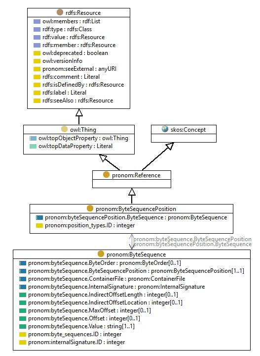

http://data.nationalarchives.gov.uk/formatregistry/def/ByteSequencePosition
Class pronom:ByteSequencePosition

rdf:type
owl:Class
rdfs:comment
Classification for the position within the bytestream of the bytesequence pattern.
rdfs:label
Byte sequence position
rdfs:subClassOf
pronom:Reference
skos:prefLabel
Byte sequence position
skos:topConceptOf
pronom:PRONOM
Instances
pronom.ByteSequencePosition:Absolute from BOF
,
pronom.ByteSequencePosition:Absolute from EOF
,
pronom.ByteSequencePosition:Indirect from BOF
,
pronom.ByteSequencePosition:Indirect from EOF
,
pronom.ByteSequencePosition:Variable
References
as rdfs:domain (
pronom:byteSequencePosition.ByteSequence
,
pronom:position_types.ID
)
as rdfs:range (
pronom:byteSequence.ByteSequencePosition
)
as skos:broader (
pronom.ByteSequencePosition:Indirect from BOF
,
pronom.ByteSequencePosition:Absolute from BOF
,
pronom.ByteSequencePosition:Variable
,
pronom.ByteSequencePosition:Indirect from EOF
,
pronom.ByteSequencePosition:Absolute from EOF
)
Generated with
TopBraid Composer
by
TopQuadrant, Inc.